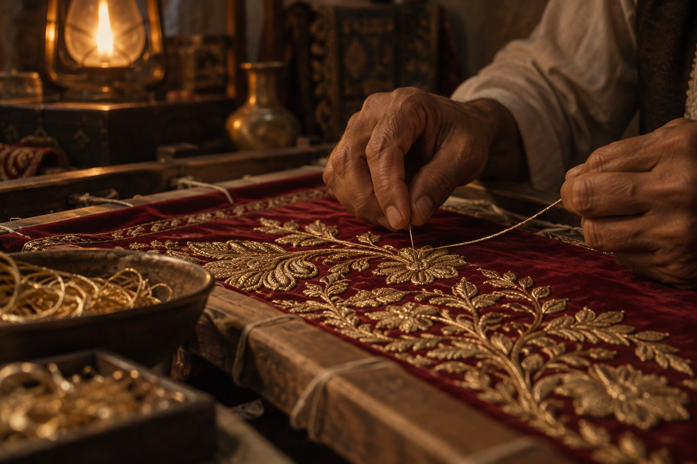
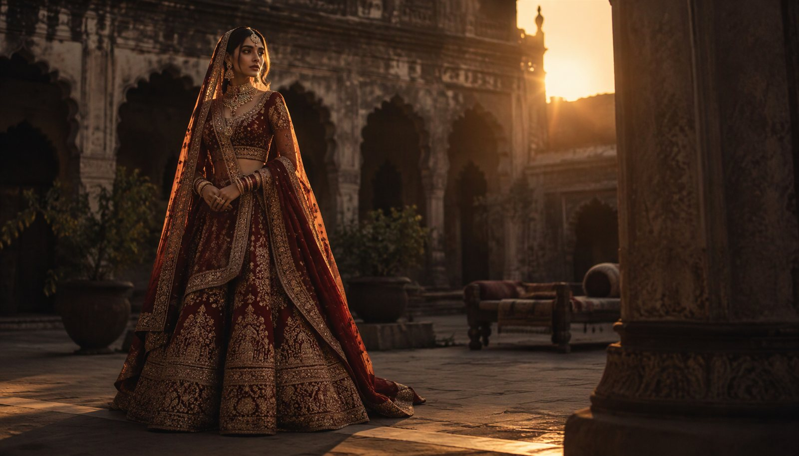

Lahore · Since 2009
The atelier
Three hundred artisans, one house — and a conviction that what is made slowly is kept longer.

Our story
Begun with a promise
Asim Jofa opened in 2009 with a small studio and a single collection of bridal wear.
The idea was simple: bring the patience of the old karigars into a modern house. No shortcut embroidery, no machine passes pretending to be handwork. Each piece would be drawn, sampled, embroidered and finished under one roof — and signed by the people who made it.
Fifteen years on, the house dresses brides in more than forty countries, yet the studio still works the same way: one sketch, one frame, one pair of hands at a time.
Asim Jofa
The craft
Three hands, one garment
Every piece passes through three studios in our Lahore atelier before it is folded for you.
Draw
Our design studio begins with paper — mood, motif and proportion. Embroidery is drawn to scale, then translated onto tracing cloth for the karigars.
Embroider
Zardozi, dabka, kora and naqshi are worked on wooden frames by hand. A bridal panel can take one artisan six weeks; nothing is rushed to a deadline.
Finish
Pieces are cut, lined and hand-finished by our master tailors, then pressed and inspected against the original sketch before they leave the house.
A studio opens
Asim Jofa begins with twelve karigars in a single Lahore workshop.
First bridal collection
The house shows its first full bridal couture collection and opens in Karachi.
Gold, set by hand
Our jewellery atelier opens, bringing polki and kundan under the same roof.
The atelier grows
The house reaches three hundred artisans and begins shipping to forty countries.
Spring couture
“The art of the heirloom” — a collection drawn from the house archive, shown in Lahore.
“We are not selling clothes. We are keeping a craft alive, one wedding at a time.”Asim Jofa — Creative Director
Visit the house